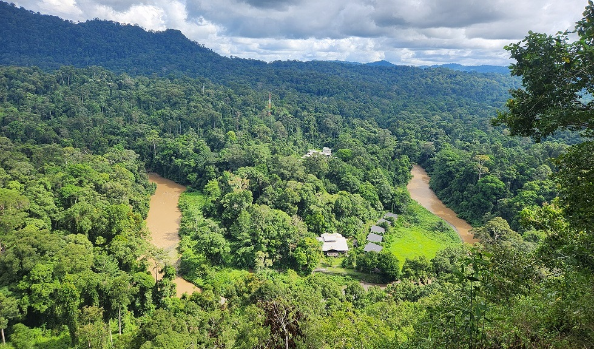
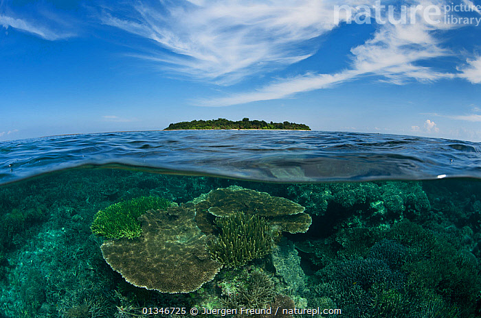
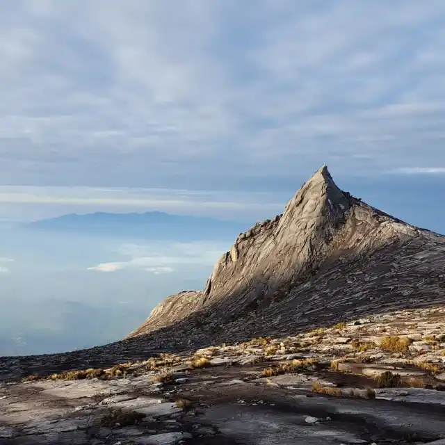
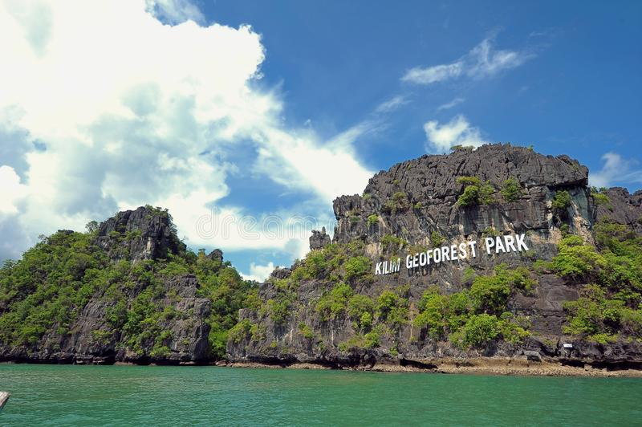

Breathtaking Destinations
Explore the pristine environments we protect and visit.

Sipadan Island

Mount Kinabalu

Langkawi Geopark
Frequently Asked Questions
Sustainable tourism minimizes the environmental impact of travel while supporting local communities and conservation efforts.
Yes, all our local guides are thoroughly vetted, trained in first aid, and certified in local ecological conservation practices.
To ensure zero footprint and a highly personalized experience, we cap all our expeditions at a maximum of 8 travelers.